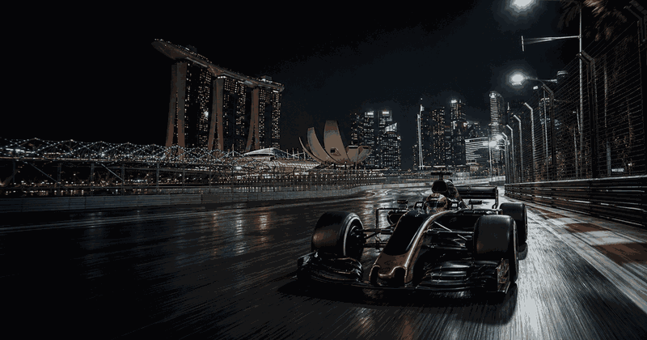
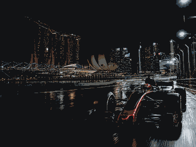

Singapore Grand Prix
First race2008
CircuitMarina Bay
Top 4 race winners
1 GermanySebastian VettelSingapore GP wins20112012201320152019
GermanySebastian VettelSingapore GP wins20112012201320152019
5
2 United KingdomLewis HamiltonSingapore GP wins2009201420172018
United KingdomLewis HamiltonSingapore GP wins2009201420172018
4
3 SpainFernando AlonsoSingapore GP wins20082010
SpainFernando AlonsoSingapore GP wins20082010
2
4United KingdomGeorge RussellSingapore GP wins2025
1

More Formula 1Formula 1 topicMore races, circuits and calendar moments.
Singapore Grand Prix 2026 in Singapore
Singapore Grand Prix overview
Singapore Grand Prix uses cards, rankings, timelines, calendars and result blocks for current editions, location cues, schedules and related topic links.